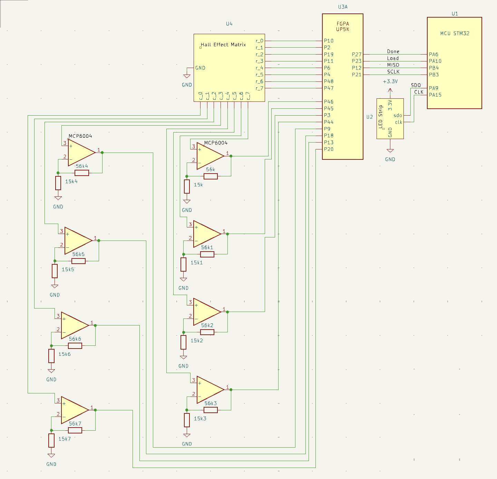

Documentation
Schematic
 Starting with the FPGA, it connects to 8 pins on the hall effect matrix scanning through the rows and powering each row on one by one. The columns of the hall effect matrix are then connected back into the FPGA so that the column data can stitched together as each row is only powered one at a time to get the full state of the board. One interesting note is that due to the amount of hall effect sensors we used together the data pins were lowered from a 3.3V signal to 1V signal. To boost this so that the FPGA could reliably read the data non-inverting operational amplifiers were used to gain the signal and either rail it out at 3.3V if it was high and 0V if it was low. The FPGA was then connected to the MCU using four wires that allowed for the transfer of data through SPI. Finally the MCU controlled the LED Strip which had two controllable pins sdo which is the data line and clk which it uses to read the sdo on.
PCB
Since this design required 64 smt hall effect sensors and dozens of wires we decided to design PCB’s to hold our hall effect sensors and allow us to easily wire them together in parallel across the rows and columns. Figure 1 shows this design.
We ended up using 64 of the boards displayed in Figure 1, one under each tile. The hall effect sensor was located at U1 which had three pads for the IC. HC which stood for Hall Col wired the data pin of our hall effect in parallel across the column and allowed us to easily connect it to PCB’s below and above it. HR which stood for Hall Row wired the Vcc of the sensor in parallel across the row allowing us to easily connect multiple Vcc in parallel when seated next to each other.
The PCB also had additional through holes for a two pin LED to be connected across the rows and columns in the event that the individually addressable LED strip did not work. Luckily for us we were able to get it to work so the LED through holes were not used in our final design.
The PCB ended up working perfectly in our project and helped us connect all the hall effect sensors together in a matrix seen in Figure 2.
Bill of Materials
| Part Name | Part # | Vendor | Link | Qty | Price |
|---|---|---|---|---|---|
| Ultra-Low-Power Digital-Switch Hall Effect Sensor SMT | DRV5032FADBZR | Texas Instruments | Link | 80 | $15.55 |
| Custom Chess Tile PCB | NA | PCBWay | Link | 75 | $49.54 |
| Scrap Wood | NA | Machine Shop | NA | 1 | $0.00 |
| Chess Pieces | NA | Makerspace 3D Printer | NA | 1 | $0.00 |
Total Cost = $65.09
Citation and Documentations
APA102 LED data sheet - We used older APA101A LED’s but this was the closest data sheet available.
First Look: APA102 RGB Pixel Addressable LED - Great youtube video on how to get these LED’s to turn on and change color
DRV5032 Hall Effect Sensor - Datasheet for the Ultra-Low-Power Digital-Switch Hall Effect Sensor
MCP 600X Op Amp - Datasheet for the MCP6004 Op Amps that we used